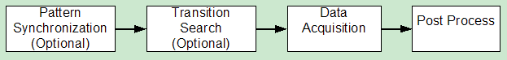
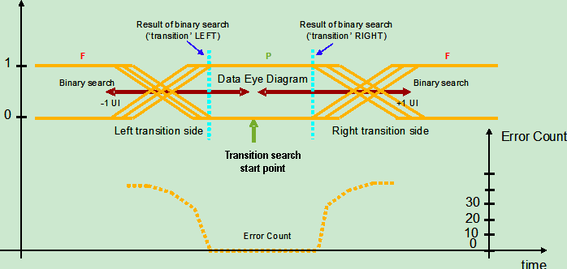
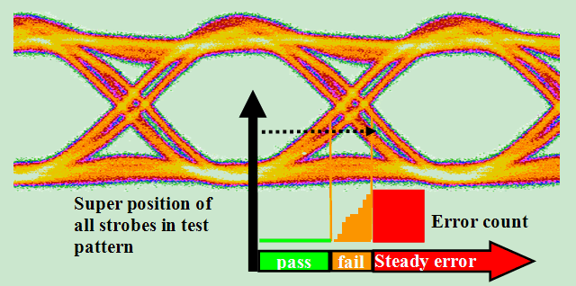
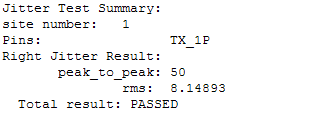
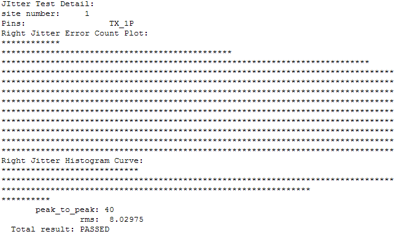
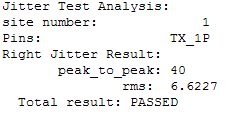
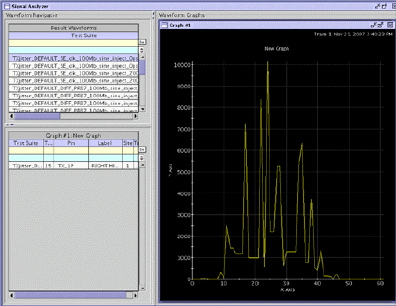

JitterHistogram
This test method performs jitter measurement on the output of a device. As a result, the peak-to-peak jitter and rms jitter will be printed in the report window and logged to the data log stream if needed.
Generally, this test method performs jitter test via shifting the spec value. When the spec value is shifted, a functional test will be executed and the error count data is retrieved. Jitter histogram is calculated through analyzing the error count data.
Four major steps are involved in this jitterHistogram test method. The steps are shown in the figure below.

In the timing setup the receiver strobe of every individual test pin needs to
include a specification variable with the name
<pinname>_<specName_postfix>. The parameter
specName_postfix defines the postfix used to define the spec variable
name.
Pattern synchronization (autoSync)
Pattern synchronization tries to
determine a delay value for the compare strobe time where the pattern passes. It can be enabled
with the autoSyncMode parameter set to ON. A linear
search is executed in the region defined by the start_ns/stop_ns parameters.
The search resolution can be defined by the autoSyncStepWidth_ns
parameter.
The figure below shows the schematic implementation of the pattern
synchronization. The compare strobe is linearly moved from start_ns to
stop_ns with the step width of autoSyncStepWidth_ns. As soon
as a fail/pass and a pass/fail transition are found, the synchronization routine will stop. The
synchronization position will be calculated by the mean value of the passing area.
The
selection of the autoSyncStepWidth_ns parameter is important and should
carefully be done to achieve fast test times and a reliable synchronization results. The
autoSyncStepWidth_ns parameter should neither exceed the minimum eye opening
of the data pattern, nor fall significantly below the minimum eye opening value. It is
recommended to have one passing strobe position within the minimum expected eye
opening.
If AutoSyncMode parameter is set to ON, the
timing specification variable will be reset to its original value at the end of the measurement.
If the pattern is already synchronized (passing functional test), do not execute the AutoSync
routine and set the AutoSyncMode parameter to OFF
The AutoSync routine will also find a
synchronization position for a failing pattern if the passOnMaxErrorCount
parameter is set to positive number. If the error count of a strobe position is less than
passOnMaxErrorCount, the position will be considered as a pass
position. This is useful for measurements where the pattern is not finally
debugged and just a few "fails" are remaining.
If autoSync is executed and no pass position is found, the execution of jitterHistogram test method will be stopped.
Transition search
For accurate jitter measurements, the data acquisition should use a fine resolution which might lead to longer test time. The tradeoff between accuracy and test time raises the need for an optimization of the exact acquisition area. Areas with a stable error count (for example, the eye opening) do not contribute to the measurement accuracy and should be avoided.
Therefore the first data acquisition should start at the first position where the error count starts to increase/decrease.
This transition search routine
finds the bit transition position (the pass-to-fail or fail-to-pass position) needed in data
acquisition. It can be enabled by setting the transitionSearchMode parameter to
ON. The start point of the transition search is the passing
synchronization position that was either achieved by previous tests or by the AutoSync routine.
From this start point, a binary search with the range defined by the
UI_width_ns parameter and the direction defined by the
transition parameter will be performed.
The transition search algorithm
requires a passing (the error count < passOnMaxErrorCount)
pattern.
The figure below shows the transition search process.

Data acquisition
Data acquisition captures the error count data during
the bit transition area. The captured error count data is used to calculate the jitter
histogram. During the data acquisition, the compare strobe will linearly be moved through a
defined area of the data eye and the error count will be captured on all measurement pins in
parallel. The step size is defined by the parameter dataAcquStepWidth_ns. This
parameter determines the accuracy of the measurement and the execution time.
In the following figure, the data acquisition procedure is illustrated. The acquisition is always from the bottom of lowest error count area to left side or to right side.

If no autoSync or transition search is done before this acquisition, the data
acquisition executes from parameter start_ns to parameter
stop_ns. You need to choose proper values for these two parameters for left
and right side transition.
If the autoSync results or transition search results are used as the acquisition start point, the test method checks for a steady error count as stop criteria (optimized data acquisition stop). The last step width for the acquisition is the maximum of (0.05*UI_Width_ns*stableSteps*dataAcquStepWidth_ns) and (CHANNEL_NL_UNCERTAINTY*(1e+9)).
There are eight cases for the range of data acquisition. The table below shows the details.
Case No. |
AutoSync |
Transition Search |
Data Acquisition |
start time |
stop time |
|
|---|---|---|---|---|---|---|
Mode |
Result |
Mode |
Result |
|||
1 |
OFF |
|
OFF |
|
Parameter |
Parameter |
2 |
OFF |
|
ON |
Pass |
pass/fail transition of Transition Search |
Optimized data acquisition stop |
3 |
OFF |
|
ON |
Fail |
- Measurement stops |
- |
4 |
ON |
Pass |
OFF |
|
AutoSync position |
Optimized data acquisition stop |
5 |
ON |
Fail |
OFF |
|
- Measurement stops |
- |
6 |
ON |
Pass |
ON |
Fail |
- Measurement stops |
- |
7 |
ON |
Pass |
ON |
Pass |
pass/fail transition of Transition Search |
Optimized Data Acquisition stop |
8 |
ON |
Fail |
ON |
|
- Measurement stops |
- |
Jitter calculation
The jitter histogram is calculated from the error
count data with the DSP_JITTER_HISTOGRAM API. The result can be displayed in
signal analyzer tool and the relative attribute values. You can get different output of the
result by setting the outputMode to SUMMARY, DETAIL or
ANALYSIS.
For SUMMARY mode, you will get the output as below in the report window.

For DETAIL mode, you will get additional ASCII plot of error count and jitter histogram in report window as shown below.

For ANALYSIS mode, the result will be displayed in the report window and the histogram will be displayed in the signal analyzer tool as shown below.


This test method supports test table. But you need to enter the test names manually in the parameter. You can use both test table and testflow limits in a testflow. The test table has higher priority than testflow limits. If a test name used in the test flow is defined in both test table and testflow limits, the value defined in the test table will be used.
Parameter |
Type |
Description |
|---|---|---|
pinList |
PinString |
The list of the pin or pin groups that the spec is shifted for. The member of pin list needs to be O or IO digital pins or pin groups, which are delimited by commas. For differential pins, you only need to input the positive pins. |
portName |
string |
(optional) Port name the pinList belongs to. Default value is @. Only pins belonging to one port can be measured together. |
specName_postfix |
string |
The postfix used to define the spec variables corresponding to the test pins. |
UI_width |
SpecValue |
The time interval of a bit in the test pattern. It is in the format of value[unit]. Default value is 0[ns]. |
start |
SpecValue |
If autoSyncMode is ON or ON_KEEP_VALUE, this is the linear search start point in pattern synchronization. If both autoSyncMode and transitionSearchMode are OFF, this parameter is the data acquisition start point. If autoSyncMode is OFF and transitionSearchMode is ON, this parameter is the transition search start point. It is in the format of value[unit]. Default value is 0[ns]. |
stop |
SpecValue |
If autoSyncMode is ON or ON_KEEP_VALUE, this is the linear search stop point in pattern synchronization. If both autoSyncMode and transitionSearchMode are OFF, this parameter is the data acquisition stop point. If autoSyncMode is OFF and transitionSearchMode is ON, this parameter is the transition search stop point. It is in the format of value[unit]. Default value is 0[ns]. |
dataAcquStepWidth |
SpecValue |
Step width of data acquisition. It is in the format of value[unit]. Default value is 0[ns]. |
passOnMaxErrorCount |
string |
The maximum edge error count specified as the pass/fail threshold. Default value is 0. |
autoSync |
string |
This is used to enable/disable the autoSync step. There are three options: OFF: The pattern synchronization is disabled. ON: The pattern synchronization is enabled. The spec variable is reset to the original value after finishing the test. ON_KEEP_VALUE: The pattern synchronization is enabled and a specification variable value will be kept for the next test suite. This value is calculated as:
or Mean value of jitter histogram - 0.5*UI_width_ns (for right side search). |
autoSync.stepWidth |
SpecValue |
Step width of linear search pattern synchronization. It is in the format of value[unit]. Default value is 0[ns]. |
transitionSearch |
string |
Enables or disables the transition search. The optional values are ON and OFF. |
transitionSearch.transition |
string |
For transition search, it determines which side of bit transition will be searched. For data acquisition, it determines the error count data of which side will be acquired for jitter histogram calculation. There are three options: LEFT, RIGHT, BOTH. |
output.mode |
string |
This parameter is in effect only if output is set ReportUI. There are three options: SUMMARY: a result table will be printed in the report window. DETAIL: an ASCII plot of the Error Count and the histogram curve will be printed in report window additionally. ANALYSIS: the jitter histogram data will be transfer to signal analyzer tool for display and debugging. Default value is SUMMARY. |
output |
string |
Print message or not. ReportUI - for debug mode None - for production mode Default is ReportUI. |
testName |
string |
The test names to be used as limits. Default is (peak_to_peak_jitter_ps,rms_jitter_ps). If you want to use the test names defined in the test table or testflow limits, type in the test names manually. Make sure the test names are in the Test name column of the test table (Refer to Structure of a TMLimits CSV file) or in the Test Name column of Tests page of Flow Data Editor. |
peak_to_peak_jitter_ps |
The pass range of peak to peak jitter |
rms_jitter_ps |
The pass range of rms jitter |
Implementation pseudo code
IF not already connected THEN
connect DUT
ENDIF
clear sequencer status
IF synchronization on THEN
do a linear search to find synchronization position of pattern
IF no pass position found THEN
stop the measurement
ENDIF
ELSEIF synchronization on keep value THEN
do a linear search to find synchronization position of pattern
IF no pass position found THEN
stop the measurement
ENDIF
ENDIF
IF transition search on THEN
IF left side on THEN
find fine transition position on left side
ENDIF
IF right side on THEN
find fine transition position on right side
ENDIF
ENDIF
IF transition area already found THEN
capture error count data in transition area
ELSE
capture error count data in specified area
ENDIF
calculate jitter histogram from error count data
IF synchronization on keep value THEN
apply spec value of synchronization position for next test suite
ENDIF
datalog test resultsFunctional changes
- Introduced before SmarTest 6.3.2
- SmarTest 6.5.0: Change the type of pinList to PinString in UTM library.
- SmarTest 6.5.2: Remove "_unit" from the parameter names in UTM library.
- SmarTest 6.5.2: Change the parameter type of UI_Width, start, stop, dataAcquStepWidth and autoSync.stepWidth to SpecValue in UTM library.
- SmarTest 7.0.3: Classic test method library is removed.
- SmarTest 7.0.3: New parameter testName.
- SmarTest 7.0.3: Test table is supported.
- SmarTest 7.1.1: Mixed usage of test table and testflow limits in one testflow is supported in TML 2.1.1.